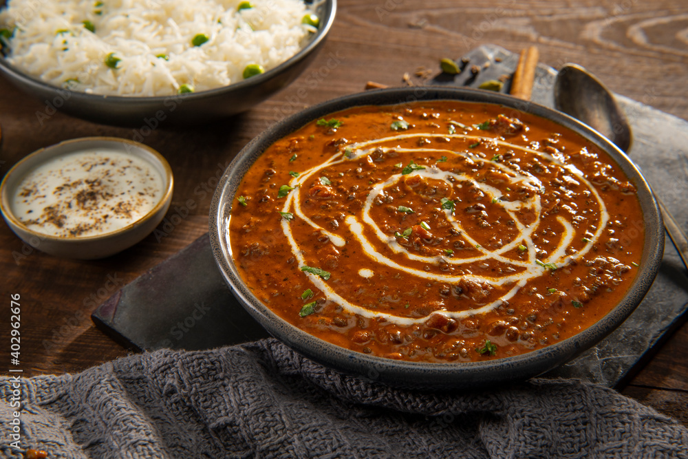

Dal Makhani Recipe

Description
It is a popular North Indian or Punjabi cuisine lentil curry made with a combination of black lentils aka urad dal and kidney beans aka rajma. Dal Makhani is known for its rich and creamy texture and taste and is often served with flavored rice like jeera rice or basic pulao rice recipes. The creamy texture of the dal is due to the way the lentils are cooked. It is slow-cooked for hours in low flame and the lentils with beans turn out to be creamy and rich in texture.
There are myriad ways to make this traditional Dal Makhni curry, but the traditional recipe is made with just urad dal and rajma beans. Initially, it is soaked and pressure cooked and then simmered and slow-cooked for hours and sometimes overnight. The curry is basically cooked and tossed with tomato and onion base which makes it sharp and tangy in taste. It is further added with full cream as an additional or optional topping which makes it even more creamy and tasty.
Ingredients
- Spices: Tej patta (bay leaf), turmeric powder, coriander powder, Cumin powder, kashmiri chili powder, garam masala
- Lentils: black urad dal/sabut urad dal, kidney beans/rajmah
- Dairy products: Ghee/Clarified butter
- Other essential items: water, tomatoes, ginger-garlic paste, finely chopped onion, salt, hing/asafoetida
Steps
- Take 1 cup of black urad dal and ¼ cup of rajma in a large bowl.Add enough water and soak overnight or atleast for 8 hours.
- Rinse the dal in a running water and transfer into a cooker. add 3 cups of water.
- Also add some salt to taste.Close the lid and pressure cook on medium flame for 5 whistles. or till the dals are cooked completely.
- In a large kadai add a tbsp of ghee and saute bay leaf for a minute. or till they turn fragrant.
- Then add finely chopped onions and saute till they change in colour.
- Once onions are done, add ginger-garlic paste. saute till raw smell disappears completely.
- Now add chopped tomatoes and cook till they are soft.
- Add turmeric, coriander powder, cumin powder, chilli powder and salt to taste. cook the masalas for a minute.
- Add turmeric, coriander powder, cumin powder, chilli powder and salt to taste. cook the masalas for a minute. Once the masalas start releasing oil from sides, add cooked dal and give a good stir.
- Adjust the consistency by adding 1 cup of water or as required. Boil for 15 minutes or more till the dal absorbs flavour and turns thick.
- To get the creamy texture, add 2 tbsp of fresh cream. you can also skip or increase the amount of cream according to your preference.
- Top up with fresh coriander leaves.
NOW SERVE AND ENJOY YOUR ABSOLUTELY TASTIEST DAL MAKHANI WITH RICE OR GARLIC NAAN!